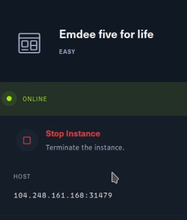
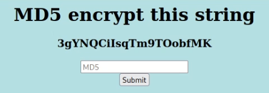
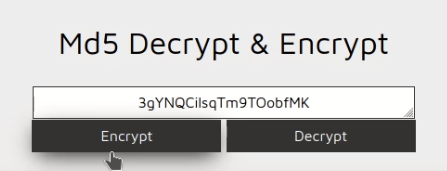
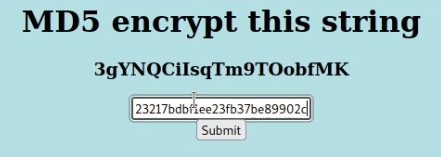
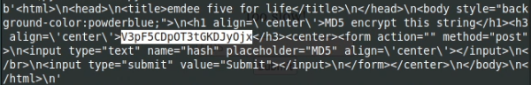
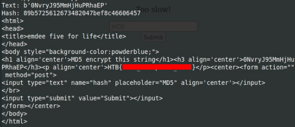

Cyber Security Education
Level: Easy
Challenge: Emdee five for life by Hack the box (HTB)
A very easy challenge by HTB — Emdee five for life — that shows why programming is crucial for basic challenges in cyber security.

This small entry challenge tells you how to do web requests with code. Later on, in more intermediate trainings, similar basic code may be in your web exploits for penetration testing.

Our task is to encrypt the given string as MD5.
Just search for MD5 encryption on the internet and you will find plenty of online tools.

After you have entered the decrypted value, the challenge will tell you that you are “Too Slow”, will give you another string.


At
this point, it is clear that it is not just possible to continue with a
manual entry. As soon as the string is visible, we have to answer with the decrypted value immediately.
We will do it with a Python script, and with one of the most basic logic.
Step 0: Setup your web request and hash library.
import requests
import hashlibreq = requests.session()
url = 'http://IP:PORT'
Step 1: Read the contents of the URL.
resp = req.get(url).content
Step 2: (Most basic logic) Parse the response and get the string that we need.
Split from <h3> tag and get the second part, and then split from </h3> and get the first part.
resp = resp.split(b'<h3 align=\'center\'>')[1].split(b('</h3>')[0]Now, you have the string you need.
Step 3: Encrypt the string with MD5
h = hashlib.md5(resp).hexdigest()The string is encrypted with MD5.
Step 4: POST it as the answer
data = dict(hash=h)
resp = req.post(url, data)You will see the flag in the HTML response.
